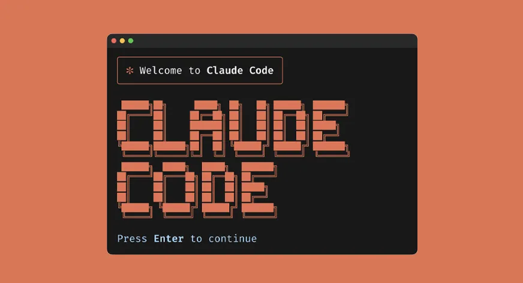
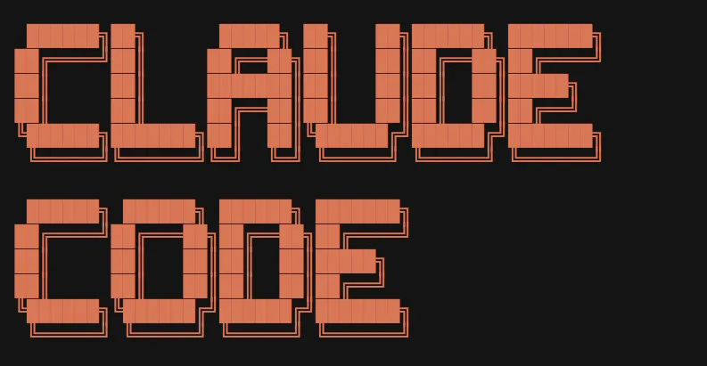
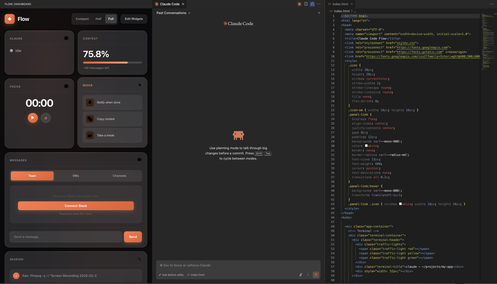

Overview
From vibing, to flowing.
Discovering vibe-coding with Claude Code, then designing and building an in-editor companion that gives anyone vibe-coding visibility into their workflow.

Problem
The Disruption of Flow.
Vibing Blind on Tokens
No visibility into token usage or remaining context. Sessions would get cut off mid-flow without warning, breaking momentum with no way to plan around it.
Losing Track of Time (and Claude)
I'd code for hours without realizing it, or walk away while Claude worked and miss when it finished. Nothing notified me.
Ideas With Nowhere to Go
When ideas came up mid-session, I wanted to capture them without breaking flow. A quick reference I could come back to later, not a whole other app.
Solution
Introducing Flow.
A companion layer to Claude Code in your editor that gives you visibility into tokens, status, focus time, messages, notes, and session history. Each feature born from a real moment of friction.


Core Widgets
How might we give developers awareness of Claude's state without interrupting flow?
Real-time activity detection, live token usage, and a Pomodoro focus timer. Pulled from Claude's actual conversation files.
How might we keep developers connected to their team while deep in terminal flow?
Real Slack API connection. Read and reply to messages without leaving VS Code.
How might we capture context and ideas without breaking concentration?
Auto-saving notepad for thoughts and TODOs. Persists across sessions.
How might we create a record of what Claude actually did during a session?
Files created, edited, commands run. All extracted from Claude's conversation history.
How might we surface reference material without context switching?
One-click access to Claude Code docs directly from the dashboard.
How might we let developers step away without losing track of progress?
Quick actions for copying context, setting reminders, and scheduling break time.
Designing the System
A modular widget system that adapts to how you work.
More features meant I needed a flexible system. Bento-style widget grid where you pick what you want, hide what you don't, and scale it to your screen.
Design Decisions
Designing and developing, in balance.
Every decision lived at the intersection of design thinking and shipping code. I used both sides to create.
- Dark theme for focus
- Easy on eyes at night
- Widgets for personalization
- Real data over mocks
- Secure credential storage
- Filesystem monitoring
- Slack API integration
Iterate
Impact
Shipped, published, and used.
Published on the VS Code Marketplace, tested and shipped 11+ versions, and presented to and used by an Anthropic employee.
Reflection
The design process has changed.
Vibe-coding collapsed the traditional design loop. I could go from idea to working product in a single session, testing real interactions instead of simulating them in Figma.
Designing for myself meant using it was the best way to iterate. Every session surfaced what was missing, and being the user, designer, and developer helped personalize the product.
Get in touch
Want to hear more about the process of iterating 11+ times for each widget and all of the late night testings?
Reach out to me at julia[dot]liu05[at]berkeley.edu